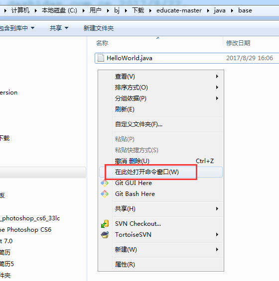
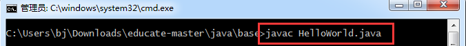
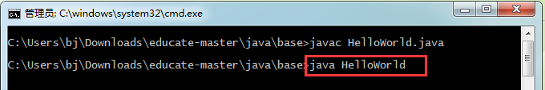
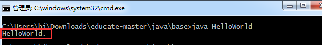

编译,运行HelloWorld.java文件,一定要在这个文件所在目录,打开命令行.
打开命令行方法
在当前目录空白处,按住Shift,同时点击鼠标右键,选择“在此处打开命令窗口”.
如图4-1所示:

[图4-1]
javac
Java的编译命令,将.java文件编译成.class文件,供系统执行.
在命令行输入如下命令,并按回车:
javac HelloWorld.java
如图4-2所示:

[图4-2]
编译成功会在当前目录生成一个HelloWorld.class文件.
这个文件由java虚拟机编译HelloWorld.java生成的二进制文件.
命令行-java
运行java程序,执行编译后的.class文件.
执行java命令的时候,只写文件名,不带.class后缀.
在命令行输入如下命令,并按回车:
java HelloWorld
如图4-3所示:

[图4-3]
控制台输出
HelloWorld!
如图4-4所示:

[图4-4]
恭喜你成功了
看看这个HelloWorld!享受一下第一次写代码的成就感.